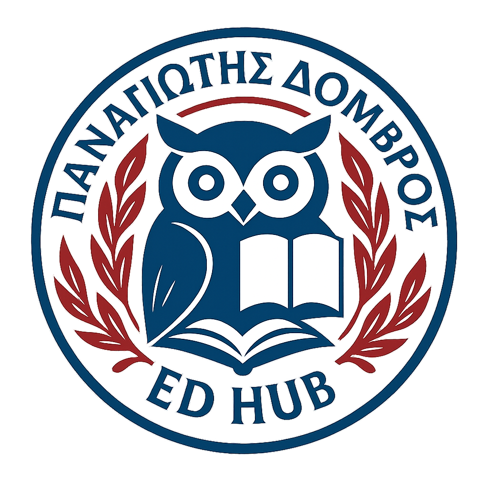

Ασφαλής Χρήση των Ψηφιακών Τεχνολογιών & e-Πολιτειότητα
Θεωρητικό πλαίσιο και διδακτικές παρεμβάσεις για τη δημιουργική, κριτική και υπεύθυνη χρήση του διαδικτύου στο μάθημα της ξένης γλώσσας.

Θεωρητικό Πλαίσιο
Ασφαλής χρήση των ψηφιακών τεχνολογιών και e-Πολιτειότητα
Η καθολική διάδοση του Διαδικτύου και των ψηφιακών τεχνολογιών έχει δημιουργήσει νέες δυνατότητες επικοινωνίας, μάθησης, πληροφόρησης και συμμετοχής. Ταυτόχρονα, όμως, έχει φέρει στην επιφάνεια μια σειρά από αρνητικά φαινόμενα, τα οποία συχνά περιγράφονται γενικά ως «κίνδυνοι στο Διαδίκτυο». Ο όρος αυτός χρειάζεται προσεκτική χρήση, επειδή δεν αποτελεί κάθε ενοχλητικό ή ανεπιθύμητο φαινόμενο άμεσο κίνδυνο. Για παράδειγμα, τα ανεπιθύμητα μηνύματα μπορεί να προκαλούν απώλεια χρόνου, ενόχληση ή υπερφόρτωση του ηλεκτρονικού ταχυδρομείου, χωρίς πάντοτε να συνιστούν σοβαρή απειλή.
Η έννοια του κινδύνου δεν είναι απόλυτη ούτε σταθερή. Διαμορφώνεται κοινωνικά, πολιτισμικά και ιστορικά. Κάτι που σε μια εποχή ή κοινωνία θεωρείται επικίνδυνο μπορεί σε άλλη να θεωρείται αποδεκτό ή ακόμη και χρήσιμο. Ο τρόπος με τον οποίο αξιολογείται ένας κίνδυνος επηρεάζεται από την ηλικία, τις αξίες, την κουλτούρα, την κοινωνική εμπειρία και το πλαίσιο μέσα στο οποίο χρησιμοποιείται μια τεχνολογία. Για τον λόγο αυτό, οι εκπαιδευτικοί και οι γονείς χρειάζεται να υιοθετούν κριτική στάση απέναντι σε γενικευμένους χαρακτηρισμούς και να αποφεύγουν την εύκολη δαιμονοποίηση του Διαδικτύου.
Ιδιαίτερη σημασία έχει η συμπεριφορά των εφήβων απέναντι στο ρίσκο. Οι έφηβοι συχνά δοκιμάζουν όρια, έλκονται από το απαγορευμένο και αγνοούν τις προειδοποιήσεις των ενηλίκων. Αυτή η στάση συνδέεται με τη διαμόρφωση της προσωπικότητας και της ταυτότητάς τους. Επομένως, η απλή απαγόρευση σπάνια αρκεί. Αντίθετα, χρειάζεται συστηματική διαπαιδαγώγηση, διάλογος, ενημέρωση και σταδιακή καλλιέργεια υπεύθυνης ψηφιακής συμπεριφοράς.
Διαδικτυακοί κίνδυνοι και μορφές βλάβης
Διαδικτυακός κίνδυνος μπορεί να θεωρηθεί κάθε στοιχείο ή πρακτική που μπορεί να προκαλέσει βλάβη στον χρήστη. Η βλάβη αυτή μπορεί να είναι σωματική, συναισθηματική, ψυχολογική, οικονομική, κοινωνική ή να αφορά τη φήμη και την υπόληψη του ατόμου. Η ασφάλεια, αντίστοιχα, συνδέεται με την προστασία της ζωής, της ακεραιότητας, της ιδιωτικότητας και της αξιοπρέπειας του χρήστη.
Οι κίνδυνοι και τα ανεπιθύμητα φαινόμενα του ψηφιακού περιβάλλοντος μπορούν να λάβουν πολλές μορφές. Ανάμεσά τους περιλαμβάνονται το ακατάλληλο ή προσβλητικό περιεχόμενο, τα ανεπιθύμητα μηνύματα, η κοινωνική αποξένωση, η διαδικτυακή αποπλάνηση, τα βίαια παιχνίδια, ο διαδικτυακός εθισμός, ο κυβερνοεκφοβισμός, η παρώθηση σε επιβλαβείς συμπεριφορές, ο ηλεκτρονικός τζόγος, το κακόβουλο λογισμικό, η παραβίαση της ιδιωτικότητας, η παραπληροφόρηση, το phishing, το pharming και οι σωματικές παθήσεις που μπορεί να προκληθούν από την παρατεταμένη χρήση ηλεκτρονικών συσκευών.
Ακατάλληλο, προσβλητικό και επιβλαβές περιεχόμενο
Το ακατάλληλο ή προσβλητικό περιεχόμενο περιλαμβάνει λεκτικό, οπτικό ή ακουστικό υλικό που παραβιάζει κοινωνικά, πολιτισμικά, θρησκευτικά ή οικογενειακά πρότυπα. Η ακαταλληλότητα, όμως, δεν είναι ίδια για όλους τους χρήστες. Εξαρτάται από την ηλικία, την ψυχική ωριμότητα, το πολιτισμικό περιβάλλον και την ικανότητα κριτικής επεξεργασίας του περιεχομένου. Τα παιδιά και οι έφηβοι είναι πιο ευάλωτοι, επειδή δεν διαθέτουν πάντα τα γνωστικά και ψυχικά εφόδια για να ερμηνεύσουν, να αξιολογήσουν ή να απορρίψουν επιβλαβή μηνύματα. Μπορεί να εκτεθούν σε περιεχόμενο ρατσιστικό, βίαιο, σεξουαλικά προκλητικό, ξενοφοβικό, παράνομο ή ιδεολογικά ακραίο. Μπορεί επίσης να συναντήσουν υλικό που προωθεί τη βία, τα ναρκωτικά, τον τζόγο, τις διατροφικές διαταραχές ή άλλες επικίνδυνες συμπεριφορές. Ένα σημαντικό στοιχείο είναι ότι τα μηνύματα των ψηφιακών πόρων δεν είναι πάντα άμεσα και φανερά. Μπορούν να μεταφέρονται έμμεσα μέσα από εικόνες, χρώματα, μεγέθη, γραμματοσειρές, διάταξη και γενικότερη αισθητική. Για παράδειγμα, μια ιστοσελίδα μπορεί να προβάλλει έμμεσα συγκεκριμένα πρότυπα σώματος, δύναμης, επιτυχίας ή κοινωνικής αποδοχής χωρίς να τα δηλώνει ρητά. Η κριτική ανάγνωση του ψηφιακού περιεχομένου είναι, επομένως, απαραίτητη.
Ανεπιθύμητα μηνύματα και διαδικτυακή εξαπάτηση
Τα ανεπιθύμητα μηνύματα, γνωστά ως spam, αποτελούν ένα από τα πιο συνηθισμένα φαινόμενα στον κυβερνοχώρο. Εμφανίζονται κυρίως στο ηλεκτρονικό ταχυδρομείο και στα κινητά τηλέφωνα και συχνά σχετίζονται με διαφημίσεις προϊόντων ή υπηρεσιών, τυχερά παιχνίδια, ψευδείς προσφορές, πορνογραφικό υλικό ή απόπειρες οικονομικής εξαπάτησης. Ορισμένα spam μηνύματα επιχειρούν να παραπλανήσουν τον χρήστη μέσω ψεύτικων ιστοριών, όπως υποτιθέμενες κληρονομιές, αδιάθετα χρηματικά ποσά ή ανύπαρκτα κέρδη. Άλλα προσποιούνται ότι προέρχονται από τράπεζες, δημόσιους φορείς ή γνωστές εταιρείες και ζητούν από τον χρήστη να πατήσει σε κάποιον σύνδεσμο ή να δώσει προσωπικά στοιχεία. Συχνά τέτοια μηνύματα περιέχουν γλωσσικά ή επικοινωνιακά λάθη, επειδή έχουν μεταφραστεί αυτόματα ή έχουν συνταχθεί πρόχειρα. Η προστασία από τέτοιες πρακτικές απαιτεί προσοχή. Ο χρήστης δεν πρέπει να πατά σε ύποπτους συνδέσμους, να απαντά σε μηνύματα που ζητούν προσωπικά στοιχεία ή να εμπιστεύεται μηνύματα που δημιουργούν αίσθηση επείγοντος. Ιδιαίτερα στις τραπεζικές συναλλαγές, είναι ασφαλέστερο να πληκτρολογείται απευθείας η επίσημη διεύθυνση της τράπεζας και όχι να χρησιμοποιούνται σύνδεσμοι που έχουν σταλεί μέσω email. Το spam έχει και περιβαλλοντική διάσταση. Η μαζική παραγωγή, αποστολή και αποθήκευση ανεπιθύμητων μηνυμάτων καταναλώνει ενέργεια και επιβαρύνει τις ψηφιακές υποδομές.
Κοινωνική αποξένωση
Η κοινωνική αποξένωση συνδέεται με την υπερβολική ενασχόληση με διαδικτυακές δραστηριότητες, όπως τα ψηφιακά παιχνίδια, οι συνομιλίες σε chat rooms, τα κοινωνικά δίκτυα και οι online κοινότητες. Όταν ο χρόνος που αφιερώνεται σε αυτές τις δραστηριότητες αυξάνεται υπερβολικά, μπορεί να μειωθεί η επαφή με τον φυσικό και κοινωνικό περίγυρο. Σε ακραίες περιπτώσεις, η εικονική ζωή γίνεται σημαντικότερη από την πραγματική. Οι σχέσεις με φίλους, γονείς και συμμαθητές μπορεί να γίνουν προβληματικές ή σπάνιες. Μπορεί επίσης να παραμεληθούν βασικές καθημερινές δραστηριότητες, η σχολική ζωή, η σωματική άσκηση, η προσωπική φροντίδα και η υγιεινή. Το φαινόμενο αυτό μπορεί να οδηγήσει σε συναισθηματική απομόνωση και να απαιτήσει ειδική υποστήριξη.
Διαδικτυακός εκφοβισμός
Ο διαδικτυακός εκφοβισμός είναι μια επιθετική, σκόπιμη και επαναλαμβανόμενη πράξη που πραγματοποιείται μέσω ηλεκτρονικών μορφών επικοινωνίας εναντίον ενός ατόμου που δυσκολεύεται να υπερασπιστεί τον εαυτό του. Αποτελεί συνέχεια του σχολικού ή κοινωνικού εκφοβισμού με ψηφιακά μέσα. Μπορεί να εμφανιστεί μέσα από email, κοινωνικά δίκτυα, ιστολόγια, ιστοσελίδες, δωμάτια συζήτησης, διαδικτυακά παιχνίδια και κινητά τηλέφωνα. Οι μορφές του περιλαμβάνουν προσβλητικά ή απειλητικά μηνύματα, διακωμώδηση, εξευτελισμό, άσεμνο περιεχόμενο, δημιουργία ψεύτικων προφίλ, δημοσίευση προσωπικών φωτογραφιών ή βίντεο χωρίς συγκατάθεση και αποκλεισμό ή παρενόχληση μέσα σε ψηφιακές κοινότητες. Η σοβαρότητα του κυβερνοεκφοβισμού οφείλεται στο ότι εισβάλλει στον προσωπικό χώρο του θύματος και μπορεί να συνεχίζεται οποιαδήποτε στιγμή της ημέρας. Το υλικό που δημοσιεύεται μπορεί να αντιγραφεί, να διαμοιραστεί και να παραμείνει στο Διαδίκτυο για μεγάλο χρονικό διάστημα. Έτσι, το θύμα συχνά αισθάνεται ότι δεν υπάρχει ασφαλής χώρος διαφυγής. Η αντιμετώπιση απαιτεί ψυχραιμία, υποστήριξη και τεκμηρίωση. Το παιδί ή ο έφηβος πρέπει να ενθαρρύνεται να μιλήσει σε κάποιον ενήλικο που εμπιστεύεται. Δεν πρέπει να απαντά στον εκφοβισμό με αντίστοιχη επιθετικότητα. Είναι χρήσιμο να κρατούνται αποδεικτικά στοιχεία, όπως στιγμιότυπα οθόνης, μηνύματα και email. Ανάλογα με τη σοβαρότητα του περιστατικού, μπορεί να χρειαστεί επικοινωνία με το σχολείο, με την πλατφόρμα όπου έγινε η παρενόχληση ή με αρμόδιες αρχές.
Παραπληροφόρηση, ψευδείς ειδήσεις και αστικοί μύθοι
Το Διαδίκτυο προσφέρει αναρίθμητες ευκαιρίες μάθησης και ενημέρωσης, αλλά δεν διαθέτει πάντα αποτελεσματικούς μηχανισμούς ελέγχου της εγκυρότητας των πληροφοριών. Έτσι, οι χρήστες μπορεί να οδηγηθούν σε λανθασμένα συμπεράσματα εξαιτίας αναληθών, ελλιπών, παραποιημένων ή παραπλανητικών πληροφοριών. Οι αστικοί μύθοι και οι ψηφιακές φάρσες διαδίδονται με μεγάλη ταχύτητα. Συχνά παρουσιάζονται με τρόπο που φαίνεται αξιόπιστος, αξιοποιώντας εικόνες, τεχνική ορολογία, δήθεν μαρτυρίες ή ψευδή στοιχεία αυθεντικότητας. Το πρόβλημα γίνεται ακόμη σοβαρότερο όταν οι χρήστες αναπαράγουν πληροφορίες χωρίς να τις ελέγχουν. Η ανάπτυξη κριτικής σκέψης είναι βασική προϋπόθεση για την ασφαλή χρήση του Διαδικτύου. Ο χρήστης χρειάζεται να ελέγχει την πηγή, τον συγγραφέα, την ημερομηνία, τον σκοπό του κειμένου και την ύπαρξη άλλων αξιόπιστων πηγών που επιβεβαιώνουν την πληροφορία. Η ικανότητα διάκρισης ανάμεσα στην έγκυρη πληροφορία και την παραπληροφόρηση αποτελεί βασικό στοιχείο του ψηφιακού γραμματισμού.
Τεχνικά μέτρα προστασίας & Διαπαιδαγώγηση
Τεχνικά μέτρα προστασίας
Η αντιμετώπιση των ψηφιακών κινδύνων μπορεί να βασιστεί σε τεχνικά μέτρα προστασίας. Σε αυτά περιλαμβάνονται φίλτρα περιεχομένου, λευκές και μαύρες λίστες, γονικός έλεγχος, σήμανση ιστοσελίδων, ηλικιακές διαβαθμίσεις, έλεγχος ανεπιθύμητων μηνυμάτων, λογισμικά antivirus και antispyware, καθώς και τείχη προστασίας. Οι λευκές λίστες επιτρέπουν την πρόσβαση μόνο σε ιστοσελίδες που θεωρούνται κατάλληλες, ενώ οι μαύρες λίστες αποκλείουν ιστοσελίδες ή αποστολείς που θεωρούνται επικίνδυνοι. Τα φίλτρα γονικού ελέγχου μπορούν να περιορίσουν την πρόσβαση σε συγκεκριμένες κατηγορίες περιεχομένου, να ορίσουν χρονικά όρια χρήσης ή να καταγράψουν τη δραστηριότητα του χρήστη. Το σύστημα PEGI αποτελεί παράδειγμα ηλικιακής διαβάθμισης για ψηφιακά παιχνίδια και προϊόντα ψυχαγωγίας. Βοηθά κυρίως τους γονείς να επιλέγουν περιεχόμενο κατάλληλο για την ηλικία των παιδιών τους. Παρά τη χρησιμότητά τους, τα τεχνικά μέτρα δεν είναι απόλυτα αποτελεσματικά. Τα φίλτρα μπορεί να αποκλείσουν κατά λάθος χρήσιμο περιεχόμενο ή να επιτρέψουν πρόσβαση σε περιεχόμενο που θα έπρεπε να αποκλειστεί. Τα spam filters μπορεί να χαρακτηρίσουν λανθασμένα νόμιμα μηνύματα ως ανεπιθύμητα ή να αφήσουν επικίνδυνα μηνύματα να φτάσουν στον χρήστη. Επομένως, τα τεχνικά μέσα είναι χρήσιμα, αλλά δεν μπορούν να αντικαταστήσουν την κρίση και την εκπαίδευση του χρήστη.
Διαπαιδαγώγηση και ενημέρωση
Η ουσιαστική προστασία των παιδιών και των εφήβων δεν μπορεί να βασιστεί μόνο στην απαγόρευση ή στον τεχνικό έλεγχο. Χρειάζεται διαπαιδαγώγηση, δηλαδή συστηματική προετοιμασία των χρηστών ώστε να κινούνται με ασφάλεια στο ψηφιακό περιβάλλον. Μια χρήσιμη αναλογία είναι η σχέση του παιδιού με τη θάλασσα. Η θάλασσα μπορεί να είναι επικίνδυνη, αλλά οι γονείς δεν απαγορεύουν στα παιδιά κάθε επαφή μαζί της. Αντίθετα, τα εξοικειώνουν σταδιακά, τους μαθαίνουν κανόνες ασφάλειας, τα συνοδεύουν στην αρχή και στη συνέχεια τα βοηθούν να αυτονομηθούν. Με τον ίδιο τρόπο, τα παιδιά χρειάζεται να μάθουν να χρησιμοποιούν το Διαδίκτυο με ασφάλεια, όχι να το αντιμετωπίζουν μόνο ως απειλή. Η διαπαιδαγώγηση περιλαμβάνει συζήτηση, κοινή πλοήγηση, παρουσίαση θετικών ψηφιακών πόρων, εξήγηση των κινδύνων, καλλιέργεια υπευθυνότητας και ενθάρρυνση της κριτικής σκέψης. Το παιδί πρέπει να μάθει τι σημαίνει ασφαλής κωδικός, προστασία προσωπικών δεδομένων, σεβασμός στην ιδιωτικότητα των άλλων, αποφυγή ύποπτων συνδέσμων, αναφορά προβληματικού περιεχομένου και υπεύθυνη συμμετοχή σε διαδικτυακές κοινότητες. Η διαπαιδαγώγηση είναι ίσως το ισχυρότερο μέσο προστασίας, επειδή βοηθά τον χρήστη να λειτουργεί αυτόνομα και υπεύθυνα ακόμη και όταν δεν υπάρχει εξωτερικός έλεγχος.
Διδακτική αξιοποίηση στο μάθημα της ξένης γλώσσας
Η ασφαλής χρήση του Διαδικτύου μπορεί να ενταχθεί δημιουργικά στη διδασκαλία της ξένης γλώσσας. Θέματα όπως η ιδιωτικότητα, τα κοινωνικά δίκτυα, η παραπληροφόρηση, ο κυβερνοεκφοβισμός και η ψηφιακή ταυτότητα προσφέρονται για συζήτηση, παραγωγή λόγου, επιχειρηματολογία και δραστηριότητες διαμεσολάβησης. Ένα βίντεο, ένα infographic ή ένα αυθεντικό ψηφιακό κείμενο μπορεί να αποτελέσει αφορμή για γλωσσική και παιδαγωγική δραστηριότητα. Οι μαθητές μπορούν να εργαστούν σε ομάδες, να αναλύσουν επιχειρήματα, να οργανώσουν debate ανάμεσα σε «γονείς» και «μαθητές», να δημιουργήσουν οδηγούς ασφαλούς πλοήγησης, να συντάξουν ενημερωτικά φυλλάδια ή να παρουσιάσουν κανόνες υπεύθυνης χρήσης των κοινωνικών δικτύων. Με αυτόν τον τρόπο, η διδασκαλία της ξένης γλώσσας δεν περιορίζεται στην εξάσκηση λεξιλογίου και γραμματικής. Συνδέεται με την ανάπτυξη ψηφιακού γραμματισμού, κριτικής σκέψης, κοινωνικής υπευθυνότητας και ενεργού πολιτειότητας.
Πόροι και φορείς υποστήριξης
Η ασφαλής χρήση του Διαδικτύου υποστηρίζεται από διάφορους ψηφιακούς και θεσμικούς φορείς. Υπάρχουν ιστοσελίδες που προσφέρουν ενημέρωση για την ασφάλεια στο Διαδίκτυο, πλατφόρμες αναφοράς παράνομου ή επιβλαβούς περιεχομένου, υπηρεσίες ελέγχου ψευδών ειδήσεων και φορείς που παρέχουν συμβουλευτική σε μαθητές, γονείς και εκπαιδευτικούς. Τέτοιοι πόροι μπορούν να αξιοποιηθούν στο σχολείο για δραστηριότητες ενημέρωσης, πρόληψης και ευαισθητοποίησης. Μπορούν επίσης να βοηθήσουν τους εκπαιδευτικούς να σχεδιάσουν παρεμβάσεις για την Ημέρα Ασφαλούς Διαδικτύου ή για ευρύτερα προγράμματα ψηφιακής αγωγής.
Πολιτειότητα, Ψηφιακή ταυτότητα και Τεχνητή Νοημοσύνη
Πολιτειότητα και ψηφιακή πολιτειότητα
Η πολιτειότητα δεν περιορίζεται στην έννοια της υπηκοότητας ή της ιθαγένειας. Συνδέεται με τα δικαιώματα, τις υποχρεώσεις, τη συμμετοχή και την υπεύθυνη δράση του ατόμου μέσα στην κοινωνία. Στην ψηφιακή εποχή, η πολιτειότητα επεκτείνεται και στον κυβερνοχώρο. Η ψηφιακή πολιτειότητα αφορά τον τρόπο με τον οποίο οι άνθρωποι συμμετέχουν, επικοινωνούν, δημιουργούν, συνεργάζονται και εκφράζονται στο ψηφιακό περιβάλλον. Περιλαμβάνει την ηλεκτρονική διακυβέρνηση, τη συμμετοχή σε δημόσιες διαδικτυακές συζητήσεις, την προστασία προσωπικών δεδομένων, τη διαχείριση της ψηφιακής ταυτότητας και την υπεύθυνη χρήση της πληροφορίας. Ο ψηφιακός πολίτης χρειάζεται να γνωρίζει τα δικαιώματα και τις υποχρεώσεις του στο Διαδίκτυο. Πρέπει να σέβεται τους άλλους, να προστατεύει την ιδιωτικότητά του, να αποφεύγει τη λογοκλοπή, να αναφέρει τις πηγές του, να κατανοεί τη σημασία των πνευματικών δικαιωμάτων και να αξιολογεί κριτικά τις πληροφορίες που συναντά.
Ψηφιακή ταυτότητα, ιδιωτικότητα και πνευματική ιδιοκτησία
Η ψηφιακή ταυτότητα αποτελεί βασική διάσταση της ψηφιακής πολιτειότητας. Κάθε χρήστης αφήνει ψηφιακά ίχνη μέσα από τις αναρτήσεις, τα σχόλια, τις φωτογραφίες, τις αναζητήσεις, τις εγγραφές σε υπηρεσίες και τη συμμετοχή του σε πλατφόρμες. Αυτά τα ίχνη μπορούν να επηρεάσουν τη φήμη, τις σχέσεις, τις σπουδές ή ακόμη και την επαγγελματική πορεία ενός ατόμου. Η προστασία της ιδιωτικότητας είναι επίσης κρίσιμη. Οι χρήστες πρέπει να γνωρίζουν ποιες πληροφορίες κοινοποιούν, σε ποιον τις κοινοποιούν και με ποιες συνέπειες. Πρέπει να είναι προσεκτικοί με τους κωδικούς πρόσβασης, τις ρυθμίσεις απορρήτου, τις εφαρμογές που χρησιμοποιούν και τα προσωπικά δεδομένα που παραχωρούν. Η πνευματική ιδιοκτησία αποτελεί ακόμη ένα σημαντικό πεδίο. Το γεγονός ότι ένα κείμενο, μια εικόνα, ένα βίντεο ή ένα τραγούδι βρίσκεται στο Διαδίκτυο δεν σημαίνει ότι μπορεί να χρησιμοποιηθεί ελεύθερα χωρίς αναφορά ή άδεια. Οι μαθητές χρειάζεται να μάθουν να αναγνωρίζουν τις πηγές τους, να αποφεύγουν τη λογοκλοπή και να κατανοούν βασικές έννοιες όπως τα Creative Commons.
Θεματικές της ψηφιακής πολιτειότητας
Η ψηφιακή πολιτειότητα μπορεί να οργανωθεί γύρω από βασικές θεματικές. Η πρόσβαση και η ένταξη αφορούν τη δυνατότητα όλων των ανθρώπων να συμμετέχουν στο ψηφιακό περιβάλλον χωρίς αποκλεισμούς. Η μάθηση και η δημιουργικότητα συνδέονται με την αξιοποίηση των ψηφιακών μέσων για παραγωγή γνώσης και έκφραση. Η πληροφοριακή παιδεία αφορά την ικανότητα αναζήτησης, αξιολόγησης και χρήσης πληροφοριών. Η ηθική και η ενσυναίσθηση είναι απαραίτητες για τον σεβασμό των άλλων στον ψηφιακό χώρο. Η υγεία και η ευεξία συνδέονται με την ισορροπημένη χρήση της τεχνολογίας και την αποφυγή υπερβολών. Η διαδικτυακή παρουσία και επικοινωνία αφορούν τον τρόπο με τον οποίο ο χρήστης παρουσιάζει τον εαυτό του και αλληλεπιδρά με τους άλλους. Η ενεργή συμμετοχή περιλαμβάνει τη χρήση των ψηφιακών μέσων για κοινωνική, πολιτική και πολιτιστική δράση. Τα δικαιώματα και οι υποχρεώσεις αφορούν την υπεύθυνη συμπεριφορά στο Διαδίκτυο. Το απόρρητο και η ασφάλεια συνδέονται με την προστασία δεδομένων και συστημάτων. Η καταναλωτική ευαισθητοποίηση αφορά την ικανότητα του χρήστη να αναγνωρίζει διαφημιστικές πρακτικές, εμπορικές στρατηγικές και πιθανούς κινδύνους στις ψηφιακές συναλλαγές.
Αλήθεια, fake news και μετα-αλήθεια
Η ψηφιακή εποχή έχει αλλάξει τον τρόπο με τον οποίο οι άνθρωποι ενημερώνονται και σχηματίζουν άποψη. Οι ψευδείς ειδήσεις και η παραπληροφόρηση μπορούν να επηρεάσουν την κοινή γνώμη, να ενισχύσουν προκαταλήψεις και να δημιουργήσουν σύγχυση. Το φαινόμενο της μετα-αλήθειας περιγράφει καταστάσεις στις οποίες τα αντικειμενικά γεγονότα επηρεάζουν λιγότερο την κοινή γνώμη από το συναίσθημα, την προσωπική πεποίθηση ή την ιδεολογική ταύτιση. Η εκπαίδευση έχει καθοριστικό ρόλο στην αντιμετώπιση αυτού του φαινομένου. Οι μαθητές χρειάζεται να μάθουν να διασταυρώνουν πληροφορίες, να αναγνωρίζουν ύποπτες πηγές, να ελέγχουν τίτλους και εικόνες, να εντοπίζουν υπερβολές ή χειριστικό λόγο και να αντιλαμβάνονται πότε ένα κείμενο επιχειρεί να τους πείσει μέσω φόβου, θυμού ή προκατάληψης.
Ψηφια πολιτειότητα και Τεχνητή Νοημοσύνη
Η Τεχνητή Νοημοσύνη δημιουργεί νέες δυνατότητες στην εκπαίδευση, αλλά και νέες προκλήσεις. Μπορεί να υποστηρίξει την εξατομικευμένη μάθηση, να βοηθήσει τους εκπαιδευτικούς στη δημιουργία υλικού, να προσφέρει ανατροφοδότηση και να διευκολύνει την πρόσβαση στη γνώση. Ταυτόχρονα, εγείρει ζητήματα δεοντολογίας, αξιοπιστίας, πνευματικών δικαιωμάτων, διαφάνειας, προκαταλήψεων και προστασίας προσωπικών δεδομένων. Ο γραμματισμός στην Τεχνητή Νοημοσύνη δεν πρέπει να περιορίζεται στη χρήση εργαλείων. Περιλαμβάνει κατανόηση του τρόπου λειτουργίας τους, ικανότητα αξιολόγησης των αποτελεσμάτων τους, δημιουργική αξιοποίησή τους και επίγνωση των ηθικών συνεπειών τους. Οι μαθητές και οι εκπαιδευτικοί χρειάζεται να αναπτύξουν στάση υπεύθυνης χρήσης, ώστε να αξιοποιούν την Τεχνητή Νοημοσύνη χωρίς να χάνουν την κριτική τους σκέψη.
Συμπέρασμα
Το Διαδίκτυο και οι ψηφιακές τεχνολογίες δεν αποτελούν από μόνες τους ούτε απειλή ούτε λύση. Είναι ένα ισχυρό περιβάλλον μάθησης, επικοινωνίας, δημιουργίας και συμμετοχής, το οποίο όμως συνοδεύεται από κινδύνους και απαιτεί υπεύθυνη χρήση. Η προστασία των παιδιών και των εφήβων δεν επιτυγχάνεται μόνο με απαγορεύσεις ή τεχνικά φίλτρα. Χρειάζεται συνδυασμός τεχνικών μέτρων, ενημέρωσης, παιδαγωγικής καθοδήγησης, διαλόγου και καλλιέργειας κριτικής σκέψης. Ο τελικός στόχος είναι η διαμόρφωση πολιτών που μπορούν να χρησιμοποιούν τις ψηφιακές τεχνολογίες με ασφάλεια, υπευθυνότητα, δημιουργικότητα και ηθική συνείδηση. Ο σύγχρονος μαθητής χρειάζεται να γίνει ενεργός ψηφιακός πολίτης: να προστατεύει τον εαυτό του, να σέβεται τους άλλους, να αξιολογεί την πληροφορία, να συμμετέχει δημιουργικά και να κατανοεί τις συνέπειες της ψηφιακής του παρουσίας.
Διδακτικές Παρεμβάσεις
Τίτλος εκπαιδευτικής δραστηριότητας
Be a Smart Digital Citizen! / Γίνε υπεύθυνος ψηφιακός πολίτης!
Σχεδιαστής δραστηριότητας
Ονοματεπώνυμο: ........................................
Ειδικότητα: Εκπαιδευτικός Αγγλικής Γλώσσας
Γνωστικό αντικείμενο
Αγγλικά
Τάξη ή τάξεις στις οποίες απευθύνεται
Η δραστηριότητα απευθύνεται σε μαθητές/τριες Γυμνασίου, κυρίως Β’ ή Γ’ Γυμνασίου. Μπορεί να αξιοποιηθεί και στην Α’ Λυκείου με κατάλληλη προσαρμογή του γλωσσικού επιπέδου.
Επίπεδο γλωσσομάθειας
Α2–Β1 σύμφωνα με την κλίμακα του ΚΕΠΑ.
Προσδοκώμενα μαθησιακά αποτελέσματα
Με την ολοκλήρωση της δραστηριότητας οι μαθητές/τριες αναμένεται:
- να κατανοούν βασικές έννοιες σχετικές με την ψηφιακή πολιτειότητα, όπως digital citizen, online safety, privacy, password, cyberbullying, fake news, respect online,
- να αναγνωρίζουν πιθανούς κινδύνους κατά τη χρήση του διαδικτύου, όπως παραπληροφόρηση, υπερβολική έκθεση προσωπικών δεδομένων, ύποπτοι σύνδεσμοι και διαδικτυακός εκφοβισμός,
- να διακρίνουν υπεύθυνες και μη υπεύθυνες διαδικτυακές συμπεριφορές,
- να χρησιμοποιούν απλό αγγλικό λεξιλόγιο για να δίνουν συμβουλές σχετικά με την ασφαλή και υπεύθυνη χρήση του διαδικτύου,
- να συνεργάζονται σε ομάδες για τη δημιουργία ενός σύντομου ψηφιακού ή έντυπου οδηγού με κανόνες ψηφιακής πολιτειότητας,
- να παράγουν σύντομα αγγλικά μηνύματα με χρήση γλωσσικών δομών όπως You should…, You shouldn’t…, Always…, Never…, Be careful when…,
- να αναπτύσσουν κριτική στάση απέναντι στο ψηφιακό περιεχόμενο που συναντούν.
Είδος δραστηριότητας
Διερευνητική δραστηριότητα, γλωσσική εξάσκηση, ομαδοσυνεργατική εργασία, συζήτηση, δημιουργία ψηφιακής αφίσας ή σύντομου οδηγού, επίλυση προβλήματος.
Περιγραφή της δραστηριότητας
Η δραστηριότητα έχει ως στόχο να ενημερώσει και να ευαισθητοποιήσει τους μαθητές/τριες σχετικά με την ψηφιακή πολιτειότητα και την ασφαλή χρήση του διαδικτύου, μέσα από τη χρήση της Αγγλικής Γλώσσας. Αρχικά, οι μαθητές/τριες παρακολουθούν ένα σύντομο εισαγωγικό οπτικό ερέθισμα, όπως ένα infographic ή μια απλή παρουσίαση με βασικούς κανόνες ψηφιακής πολιτειότητας.
Στη συνέχεια, ο/η εκπαιδευτικός παρουσιάζει βασικό λεξιλόγιο στα αγγλικά, όπως: digital citizen, online safety, personal information, password, privacy, cyberbullying, fake news, respect, report, block, think before you post.
Ακολουθεί σύντομη συζήτηση στην τάξη, με ερωτήσεις όπως: What do you do online every day? What is safe or unsafe online? What should a good digital citizen do? What should we never share online? Στη συνέχεια, οι μαθητές/τριες εργάζονται σε ομάδες. Κάθε ομάδα λαμβάνει μία σύντομη κάρτα-σενάριο στα αγγλικά, προσαρμοσμένη στο επίπεδο Α2–Β1. Τα σενάρια παρουσιάζουν καθημερινές καταστάσεις από τη διαδικτυακή ζωή των μαθητών, όπως: A student shares a classmate’s photo without asking. A student receives a strange message with a link. A student finds information online for a school project but does not check the source. A student uses the same easy password everywhere. A student sees a mean comment about a friend in a group chat. Οι μαθητές/τριες συζητούν στην ομάδα τους και αποφασίζουν: What is the problem? Is this safe or unsafe? What should the student do? What rule can we write for digital citizens? Κάθε ομάδα γράφει 3–4 απλούς κανόνες στα αγγλικά. Για παράδειγμα: Don’t share personal information online. Always ask before you post a photo. Check information before you use it. Use strong passwords. Be kind online. Don’t click on strange links. Report cyberbullying to an adult. Στο τελικό στάδιο, οι ομάδες δημιουργούν μια μικρή ψηφιακή αφίσα ή έναν σύντομο οδηγό με τίτλο “Our Digital Citizenship Code”. Η αφίσα μπορεί να δημιουργηθεί σε Canva, Google Slides, PowerPoint ή σε χαρτί, ανάλογα με τις διαθέσιμες υποδομές. Η δραστηριότητα ολοκληρώνεται με σύντομη παρουσίαση των αφισών στην τάξη. Κάθε ομάδα παρουσιάζει 2–3 κανόνες στα αγγλικά και εξηγεί γιατί είναι σημαντικοί. Στο τέλος, η τάξη συνθέτει έναν κοινό δεκάλογο ψηφιακής πολιτειότητας.
Διάρκεια
45 λεπτά ή 2 διδακτικές ώρες, ανάλογα με το βάθος επεξεργασίας και το αν η αφίσα θα δημιουργηθεί ψηφιακά ή χειρόγραφα.
Ενδεικτική κατανομή χρόνου για μία διδακτική ώρα
5’ Εισαγωγή στο θέμα και ενεργοποίηση πρότερων γνώσεων
10’ Παρουσίαση βασικού λεξιλογίου και παραδειγμάτων
10’ Εργασία σε ομάδες με κάρτες-σενάρια
15’ Δημιουργία κανόνων και μικρής αφίσας
5’ Παρουσίαση και αναστοχασμός
Οργάνωση τάξης
Οι μαθητές/τριες εργάζονται σε μικρές ομάδες των 3–4 ατόμων. Η ομαδική εργασία ενισχύει τη συνεργασία, την ανταλλαγή απόψεων και την παραγωγή προφορικού και γραπτού λόγου στα αγγλικά. Ο/η εκπαιδευτικός λειτουργεί ως συντονιστής/τρια, υποστηρίζει γλωσσικά τους μαθητές, εξηγεί άγνωστο λεξιλόγιο, βοηθά στη διατύπωση των κανόνων και ενθαρρύνει τη συμμετοχή όλων.
Ψηφιακό εκπαιδευτικό περιεχόμενο, εργαλεία, πηγές
Μπορούν να αξιοποιηθούν: σύντομο infographic για την ασφαλή χρήση του διαδικτύου, υλικό από το SaferInternet4Kids, υλικό από το SaferInternet, σύντομο βίντεο για online safety ή digital citizenship, Canva ή Google Slides για τη δημιουργία ψηφιακής αφίσας, Padlet ή ψηφιακός πίνακας για τη συλλογή κανόνων, διαδραστικός πίνακας ή προβολέας, φύλλο εργασίας με κάρτες-σενάρια και χρήσιμες φράσεις.
Οδηγίες προς τους μαθητές
Be a Smart Digital Citizen! Today we are going to talk about digital citizenship. A digital citizen is a person who uses the internet safely, kindly and responsibly. Work in groups. Read your situation card. Talk with your group and answer the questions: What is the problem? Is it safe or unsafe? What should the student do? What rule can you write for all digital citizens? Use these phrases: You should… You shouldn’t… Always… Never… Be careful when… Don’t… Ask an adult when… Then create a small poster with the title: Our Digital Citizenship Code Write 3–4 rules in English. Add simple icons, drawings or pictures. At the end, present your poster to the class. Example rules: Never share your password. Don’t post photos of others without asking. Be kind online. Check information before you believe it. Don’t click on strange links. Tell an adult if you see cyberbullying.
Ενδεικτικές κάρτες-σενάρια για τις ομάδες
Maria takes a funny photo of her friend and posts it in the class group chat. Her friend feels sad and angry.
Questions: What is the problem? What should Maria do? What is your digital citizenship rule?
Nick receives a message: “Click here! You won a free phone!” He does not know the sender.
Questions: Is this message safe? What should Nick do? What is your digital citizenship rule?
Eleni finds information for a school project on a website. She copies everything and does not write the source.
Questions: What is the problem? What should Eleni do? What is your digital citizenship rule?
Kostas uses the password “123456” for his email, games and social media.
Questions: Is this a strong password? What should Kostas do? What is your digital citizenship rule?
A student writes a mean comment about a classmate in an online group.
Questions: Is this cyberbullying? What should the other students do? What is your digital citizenship rule?
Τεκμηρίωση της δραστηριότητας
Η δραστηριότητα επιλέχθηκε επειδή η ψηφιακή πολιτειότητα αποτελεί βασικό ζήτημα για τους μαθητές/τριες, οι οποίοι χρησιμοποιούν καθημερινά το διαδίκτυο για επικοινωνία, ψυχαγωγία και σχολικές εργασίες. Η ενημέρωση για την ασφαλή και υπεύθυνη χρήση των ψηφιακών τεχνολογιών δεν πρέπει να περιορίζεται σε θεωρητικές οδηγίες, αλλά να συνδέεται με πραγματικές καταστάσεις που οι μαθητές μπορούν να αναγνωρίσουν. Η χρήση σεναρίων βοηθά τους μαθητές/τριες να κατανοήσουν πρακτικά τι σημαίνει υπεύθυνη ψηφιακή συμπεριφορά. Οι μαθητές δεν απομνημονεύουν απλώς κανόνες, αλλά καλούνται να εντοπίσουν το πρόβλημα, να συζητήσουν πιθανές λύσεις και να διατυπώσουν συμβουλές στην Αγγλική Γλώσσα. Η δραστηριότητα ενισχύει παράλληλα τον ψηφιακό γραμματισμό και τη γλωσσική ανάπτυξη. Οι μαθητές εξασκούνται στην κατανόηση απλών αγγλικών κειμένων, στην παραγωγή σύντομου γραπτού λόγου και στην προφορική παρουσίαση. Παράλληλα, αναπτύσσουν δεξιότητες συνεργασίας, κριτικής σκέψης και κοινωνικής υπευθυνότητας. Η αξιοποίηση ψηφιακών εργαλείων, όπως Canva, Google Slides ή Padlet, προσθέτει αξία στη δραστηριότητα, επειδή επιτρέπει στους μαθητές να δημιουργήσουν αυθεντικό ψηφιακό προϊόν και να χρησιμοποιήσουν την τεχνολογία με δημιουργικό και υπεύθυνο τρόπο. Αν δεν υπάρχει τεχνική δυνατότητα, η δραστηριότητα μπορεί να υλοποιηθεί εξίσου αποτελεσματικά με έντυπες κάρτες και χειρόγραφες αφίσες.
Πρόσθετα στοιχεία
Η δραστηριότητα μπορεί να επεκταθεί με τη δημιουργία ενός κοινού ψηφιακού οδηγού της τάξης με τίτλο “Our Class Digital Citizenship Guide”. Ο οδηγός μπορεί να αναρτηθεί στην ηλεκτρονική τάξη ή στον πίνακα ανακοινώσεων του σχολείου. Μπορεί επίσης να συνδεθεί με την Ημέρα Ασφαλούς Διαδικτύου. Οι μαθητές μπορούν να παρουσιάσουν τις αφίσες τους σε άλλες τάξεις ή να δημιουργήσουν σύντομα μηνύματα ευαισθητοποίησης στα αγγλικά. Πιθανές δυσκολίες των μαθητών μπορεί να είναι το περιορισμένο λεξιλόγιο, η δυσκολία διατύπωσης συμβουλών στα αγγλικά ή η τάση να απαντούν στα ελληνικά. Για τον λόγο αυτό, ο/η εκπαιδευτικός μπορεί να δώσει έτοιμες φράσεις-στηρίγματα, λεξιλόγιο στον πίνακα και παραδείγματα κανόνων. Για μαθητές χαμηλότερου επιπέδου μπορούν να δοθούν ημιτελείς προτάσεις, όπως: Don’t share… Always check… Be kind… Ask an adult… Never click… Για μαθητές υψηλότερου επιπέδου μπορεί να ζητηθεί πιο αναπτυγμένη παραγωγή λόγου, όπως σύντομη παράγραφος με τίτλο “Why digital citizenship is important” ή δημιουργία σύντομου role-play ανάμεσα σε έναν μαθητή, έναν γονέα και έναν εκπαιδευτικό. Η τελική αξιολόγηση μπορεί να γίνει με απλό φύλλο αυτοαξιολόγησης, όπου οι μαθητές σημειώνουν: I can name three online dangers. I can give advice in English. I can explain one rule for digital citizens. I can work with my group. I can use the internet more safely.
Τίτλος εκπαιδευτικής δραστηριότητας
Ich bin ein guter digitaler Bürger! / Είμαι καλός ψηφιακός πολίτης!
Σχεδιαστής δραστηριότητας
Ονοματεπώνυμο: ........................................
Ειδικότητα: Εκπαιδευτικός Γερμανικής Γλώσσας
Γνωστικό αντικείμενο
Γερμανικά
Τάξη ή τάξεις στις οποίες απευθύνεται
Η δραστηριότητα απευθύνεται σε μαθητές/τριες Γυμνασίου που διδάσκονται Γερμανικά ως δεύτερη ξένη γλώσσα. Μπορεί να αξιοποιηθεί κυρίως στη Β’ ή Γ’ Γυμνασίου, ανάλογα με το επίπεδο της τάξης.
Επίπεδο γλωσσομάθειας
Α1+–Α2 σύμφωνα με την κλίμακα του ΚΕΠΑ.
Προσδοκώμενα μαθησιακά αποτελέσματα
Με την ολοκλήρωση της δραστηριότητας οι μαθητές/τριες αναμένεται:
- να κατανοούν βασικό λεξιλόγιο στα γερμανικά σχετικά με την ψηφιακή πολιτειότητα και την ασφάλεια στο διαδίκτυο,
- να αναγνωρίζουν απλές ψηφιακές συμπεριφορές ως ασφαλείς ή μη ασφαλείς,
- να κατανοούν σύντομα και απλά σενάρια στα γερμανικά,
- να απαντούν σε απλές ερωτήσεις με σύντομες φράσεις,
- να δίνουν βασικές συμβουλές στα γερμανικά χρησιμοποιώντας απλές δομές,
- να συνεργάζονται σε ομάδες για να δημιουργήσουν έναν σύντομο κώδικα ψηφιακής συμπεριφοράς,
- να παράγουν απλούς κανόνες στα γερμανικά με τη μορφή σύντομων προτάσεων,
- να συνδέουν τη χρήση της γερμανικής γλώσσας με πραγματικές καταστάσεις της καθημερινής ψηφιακής ζωής.
Βασικό λεξιλόγιο
Ο/η εκπαιδευτικός παρουσιάζει και εξηγεί το παρακάτω λεξιλόγιο με εικόνες, παραδείγματα ή σύντομη μετάφραση: der digitale Bürger / die digitale Bürgerin = ο/η ψηφιακός/ή πολίτης, online sicher sein = είμαι ασφαλής στο διαδίκτυο, persönliche Daten = προσωπικά δεδομένα, das Passwort = ο κωδικός πρόσβασης, die Privatsphäre = η ιδιωτικότητα, Cybermobbing = διαδικτυακός εκφοβισμός, falsche Nachrichten = ψευδείς ειδήσεις, der Respekt = ο σεβασμός, melden = αναφέρω, blockieren = μπλοκάρω, erst denken, dann posten = πρώτα σκέφτομαι, μετά δημοσιεύω
Χρήσιμες γλωσσικές δομές
Οι μαθητές/τριες μπορούν να χρησιμοποιήσουν τις παρακάτω φράσεις: Das ist sicher. = Αυτό είναι ασφαλές. Das ist nicht sicher. = Αυτό δεν είναι ασφαλές. Das ist ein Problem. = Αυτό είναι πρόβλημα. Er/Sie soll … = Αυτός/Αυτή πρέπει να … Er/Sie soll nicht … = Αυτός/Αυτή δεν πρέπει να … Man soll … = Πρέπει να … Man soll nicht … = Δεν πρέπει να … Sei nett online. = Να είσαι ευγενικός/ή στο διαδίκτυο. Teile keine persönlichen Daten. = Μη μοιράζεσαι προσωπικά δεδομένα. Klicke nicht auf komische Links. = Μην πατάς σε περίεργους συνδέσμους. Benutze ein starkes Passwort. = Χρησιμοποίησε έναν δυνατό κωδικό. Frage zuerst. = Ρώτα πρώτα. Sprich mit einem Erwachsenen. = Μίλησε με έναν ενήλικο.
Είδος δραστηριότητας
Διερευνητική δραστηριότητα, γλωσσική εξάσκηση, ομαδοσυνεργατική εργασία, συζήτηση, δημιουργία αφίσας ή σύντομου οδηγού, επίλυση προβλήματος.
Περιγραφή της δραστηριότητας
Η δραστηριότητα έχει ως στόχο την ενημέρωση και ευαισθητοποίηση των μαθητών/τριών σχετικά με την ψηφιακή πολιτειότητα μέσα από τη χρήση απλής Γερμανικής Γλώσσας. Στην αρχή, ο/η εκπαιδευτικός προβάλλει ένα απλό infographic στα γερμανικά με βασικούς κανόνες ψηφιακής πολιτειότητας.
Οι κανόνες είναι σύντομοι, οπτικοποιημένοι και γλωσσικά προσαρμοσμένοι στο επίπεδο Α1+–Α2. Ενδεικτικοί κανόνες: Schütze deine Daten. Benutze ein starkes Passwort. Denk zuerst, poste dann. Sei nett online. Prüfe Informationen. Klicke nicht auf komische Links. Frage, bevor du Fotos teilst. Sprich mit einem Erwachsenen. Ακολουθεί σύντομη εισαγωγική συζήτηση με απλές ερωτήσεις: Was machst du online? Chattest du mit Freunden? Spielst du online? Suchst du Informationen? Was ist sicher? Was ist nicht sicher? Στη συνέχεια, οι μαθητές/τριες χωρίζονται σε ομάδες των 3–4 ατόμων. Κάθε ομάδα παίρνει μία κάρτα-σενάριο στα γερμανικά. Τα σενάρια είναι σύντομα και βασίζονται σε καθημερινές ψηφιακές καταστάσεις: δημοσίευση φωτογραφίας χωρίς άδεια, ύποπτος σύνδεσμος, αντιγραφή πληροφοριών χωρίς πηγή, αδύναμος κωδικός, κακό σχόλιο σε ομαδική συνομιλία. Οι μαθητές/τριες διαβάζουν το σενάριο και απαντούν σε απλές ερωτήσεις: Was ist das Problem? Ist das sicher oder nicht sicher? Was soll die Person tun? Was ist eure digitale Regel? Οι απαντήσεις μπορούν να είναι σύντομες, με λέξεις-κλειδιά ή απλές προτάσεις. Ο/η εκπαιδευτικός παρέχει γλωσσική υποστήριξη στον πίνακα. Στο τελικό στάδιο, κάθε ομάδα δημιουργεί 3–4 απλούς κανόνες στα γερμανικά για έναν κοινό κώδικα ψηφιακής πολιτειότητας με τίτλο: Unser digitaler Klassen-Kodex Οι κανόνες μπορούν να γραφτούν σε χαρτί, σε αφίσα ή σε απλό ψηφιακό περιβάλλον, όπως Canva, Google Slides ή Padlet, εφόσον υπάρχει τεχνική δυνατότητα. Η δραστηριότητα ολοκληρώνεται με σύντομη παρουσίαση. Κάθε ομάδα διαβάζει 1–2 κανόνες στα γερμανικά. Στο τέλος, η τάξη επιλέγει τους καλύτερους κανόνες και δημιουργεί έναν κοινό δεκάλογο.
Διάρκεια
45 λεπτά ή 2 διδακτικές ώρες.
Ενδεικτική κατανομή για μία διδακτική ώρα
5’ Εισαγωγή στο θέμα με εικόνα ή infographic
10’ Παρουσίαση λεξιλογίου και χρήσιμων φράσεων
10’ Ανάγνωση και κατανόηση καρτών-σεναρίων
15’ Ομαδική εργασία και δημιουργία κανόνων
5’ Παρουσίαση και αναστοχασμός
Οργάνωση τάξης
Οι μαθητές/τριες εργάζονται σε ομάδες των 3–4 ατόμων. Ο/η εκπαιδευτικός: παρουσιάζει το βασικό λεξιλόγιο, εξηγεί τις οδηγίες, υποστηρίζει τις ομάδες γλωσσικά, δίνει έτοιμες φράσεις, βοηθά στη διατύπωση απλών γερμανικών προτάσεων, ενθαρρύνει όλους τους μαθητές να συμμετάσχουν. Οι μαθητές/τριες: διαβάζουν το σενάριο, εντοπίζουν το πρόβλημα, συζητούν πιθανές λύσεις, γράφουν απλούς κανόνες, παρουσιάζουν σύντομα την ιδέα τους.
Ψηφιακό εκπαιδευτικό περιεχόμενο, εργαλεία, πηγές
Μπορούν να αξιοποιηθούν: απλό infographic στα γερμανικά με κανόνες ψηφιακής πολιτειότητας, κάρτες-σενάρια στα γερμανικά, φύλλο εργασίας στα γερμανικά, λεξιλόγιο με εικόνες, Canva ή Google Slides για δημιουργία αφίσας, Padlet ή ψηφιακός πίνακας για συλλογή κανόνων, προβολέας ή διαδραστικός πίνακας, υλικό από φορείς ασφαλούς διαδικτύου, προσαρμοσμένο γλωσσικά από τον/την εκπαιδευτικό.
Οδηγίες προς τους μαθητές
Ich bin ein guter digitaler Bürger! Arbeitet in Gruppen. Lest eure Szenario-Karte. Sprecht zusammen und antwortet auf die Fragen. Was ist das Problem? Ist das sicher oder nicht sicher? Was soll die Person tun? Was ist eure digitale Regel? Benutzt diese Sätze: Das ist sicher. Das ist nicht sicher. Das ist ein Problem. Er/Sie soll … Er/Sie soll nicht … Man soll … Man soll nicht … Sei nett online. Sprich mit einem Erwachsenen. Schreibt dann 3–4 Regeln für digitale Bürgerinnen und Bürger. Titel: Unser digitaler Klassen-Kodex Beispiele: Schütze deine Daten. Benutze ein starkes Passwort. Sei nett online. Klicke nicht auf komische Links. Prüfe Informationen. Frage, bevor du Fotos teilst. Sprich mit einem Erwachsenen.
Ενδεικτικές κάρτες-σενάρια στα γερμανικά
Maria macht ein lustiges Foto von ihrer Freundin. Sie postet das Foto im Klassenchat. Ihre Freundin ist traurig und wütend.
Nick bekommt eine Nachricht: „Klick hier! Du gewinnst ein neues Handy!“ Er kennt die Person nicht.
Eleni findet Informationen für ein Schulprojekt auf einer Webseite. Sie kopiert alles. Sie schreibt keine Quelle.
Kostas benutzt das Passwort „123456“ für seine E-Mail, Spiele und soziale Medien.
Ein Schüler schreibt einen gemeinen Kommentar über einen Mitschüler in einer Online-Gruppe.
Τεκμηρίωση της δραστηριότητας
Η δραστηριότητα επιλέχθηκε επειδή η ψηφιακή πολιτειότητα αποτελεί άμεσα συνδεδεμένο θέμα με την καθημερινότητα των μαθητών/τριών. Οι μαθητές χρησιμοποιούν συχνά το διαδίκτυο για επικοινωνία, παιχνίδι, αναζήτηση πληροφοριών και σχολικές εργασίες. Επομένως, η διδασκαλία της Γερμανικής Γλώσσας μπορεί να συνδεθεί με ένα πραγματικό και χρήσιμο επικοινωνιακό πλαίσιο. Η προσαρμογή στο επίπεδο Α1+–Α2 επιτυγχάνεται με: σύντομα κείμενα, απλό λεξιλόγιο, οικείες καταστάσεις, συχνή χρήση εικόνων, έτοιμες φράσεις-στηρίγματα, επανάληψη βασικών δομών, περιορισμένη και καθοδηγούμενη παραγωγή λόγου. Οι κάρτες-σενάρια βοηθούν τους μαθητές να κατανοήσουν την έννοια της ψηφιακής πολιτειότητας μέσα από πρακτικά παραδείγματα. Αντί να απομνημονεύουν κανόνες, καλούνται να εντοπίσουν ένα πρόβλημα, να αποφασίσουν αν μια συμπεριφορά είναι ασφαλής ή όχι και να διατυπώσουν μια απλή συμβουλή στα γερμανικά. Η δραστηριότητα συνδυάζει γλωσσικούς και παιδαγωγικούς στόχους. Οι μαθητές εξασκούνται στην κατανόηση γραπτού λόγου, στην παραγωγή σύντομων προτάσεων, στη συνεργασία και στην προφορική παρουσίαση. Παράλληλα, καλλιεργούν δεξιότητες ψηφιακού γραμματισμού, υπευθυνότητας και σεβασμού στον διαδικτυακό χώρο. Η χρήση ψηφιακών εργαλείων, όπως Canva, Google Slides ή Padlet, προσθέτει αξία, καθώς οι μαθητές δημιουργούν ένα αυθεντικό προϊόν στη γλώσσα-στόχο. Ωστόσο, η δραστηριότητα μπορεί να υλοποιηθεί και χωρίς ψηφιακά μέσα, με έντυπες κάρτες και χειρόγραφες αφίσες.
Πρόσθετα στοιχεία
Για μαθητές που δυσκολεύονται περισσότερο, μπορούν να δοθούν ημιτελείς προτάσεις: Man soll … Man soll nicht … Er soll … Sie soll … Das ist sicher. Das ist nicht sicher. Das ist ein Problem. Για πιο προχωρημένους μαθητές, μπορεί να ζητηθεί μικρή προφορική παρουσίαση: Unsere Regel ist: … Sie ist wichtig, denn … Η δραστηριότητα μπορεί επίσης να επεκταθεί με: δημιουργία γερμανόγλωσσης αφίσας για την τάξη, μικρό role-play, σύντομο quiz λεξιλογίου, δημιουργία κοινού ψηφιακού οδηγού με τίτλο „Sicher online – unser Klassenratgeber“, σύνδεση με την Ημέρα Ασφαλούς Διαδικτύου.
Ενδεικτική αξιολόγηση
Η αξιολόγηση μπορεί να γίνει με βάση: τη συμμετοχή στην ομάδα, την κατανόηση του σεναρίου, τη σωστή χρήση βασικού λεξιλογίου, τη διατύπωση απλής συμβουλής, τη δημιουργία ενός κατανοητού κανόνα στα γερμανικά, την προφορική παρουσίαση της ομάδας. Δεν δίνεται έμφαση στη γραμματική τελειότητα, αλλά στην επικοινωνιακή αποτελεσματικότητα, στην κατανόηση του προβλήματος και στη χρήση της Γερμανικής Γλώσσας για έναν πραγματικό σκοπό.
Τίτλος εκπαιδευτικής δραστηριότητας
Je suis un bon citoyen numérique ! / Είμαι καλός ψηφιακός πολίτης!
Σχεδιαστής δραστηριότητας
Ονοματεπώνυμο: ........................................
Ειδικότητα: Εκπαιδευτικός Γαλλικής Γλώσσας
Γνωστικό αντικείμενο
Γαλλικά
Τάξη ή τάξεις στις οποίες απευθύνεται
Η δραστηριότητα απευθύνεται σε μαθητές/τριες Γυμνασίου που διδάσκονται Γαλλικά ως δεύτερη ξένη γλώσσα. Μπορεί να αξιοποιηθεί κυρίως στη Β’ ή Γ’ Γυμνασίου, ανάλογα με το επίπεδο της τάξης και την εξοικείωση των μαθητών/τριών με βασικό λεξιλόγιο καθημερινής επικοινωνίας.
Επίπεδο γλωσσομάθειας
Α1+ σύμφωνα με την κλίμακα του ΚΕΠΑ.
Προσδοκώμενα μαθησιακά αποτελέσματα
Με την ολοκλήρωση της δραστηριότητας οι μαθητές/τριες αναμένεται:
- να κατανοούν βασικές λέξεις και φράσεις στα γαλλικά σχετικά με την ψηφιακή πολιτειότητα,
- να αναγνωρίζουν απλές ασφαλείς και μη ασφαλείς συμπεριφορές στο διαδίκτυο,
- να κατανοούν πολύ σύντομα σενάρια στα γαλλικά με τη βοήθεια εικόνων και λεξιλογίου,
- να απαντούν σε απλές ερωτήσεις με λέξεις-κλειδιά ή σύντομες προτάσεις,
- να δίνουν βασικές συμβουλές στα γαλλικά με απλές δομές,
- να συνεργάζονται σε μικρές ομάδες,
- να δημιουργούν 2–4 απλούς κανόνες ψηφιακής συμπεριφοράς στα γαλλικά,
- να συνδέουν τη χρήση της γαλλικής γλώσσας με πραγματικές καταστάσεις της καθημερινής ψηφιακής ζωής.
Βασικό λεξιλόγιο
Ο/η εκπαιδευτικός παρουσιάζει το παρακάτω λεξιλόγιο με εικόνες, παραδείγματα ή σύντομη μετάφραση: le citoyen numérique / la citoyenne numérique = ο/η ψηφιακός/ή πολίτης, être en sécurité en ligne = είμαι ασφαλής στο διαδίκτυο, les informations personnelles = προσωπικά δεδομένα, le mot de passe = ο κωδικός πρόσβασης, la vie privée = η ιδιωτικότητα, le cyberharcèlement = διαδικτυακός εκφοβισμός, les fausses informations = ψευδείς ειδήσεις, le respect = ο σεβασμός, signaler = αναφέρω, bloquer = μπλοκάρω, réfléchir avant de publier = σκέφτομαι πριν δημοσιεύσω.
Χρήσιμες γλωσσικές δομές
Οι μαθητές/τριες μπορούν να χρησιμοποιήσουν τις παρακάτω φράσεις: C’est sûr. = Είναι ασφαλές. Ce n’est pas sûr. = Δεν είναι ασφαλές. C’est un problème. = Είναι πρόβλημα. Il/Elle doit … = Αυτός/Αυτή πρέπει να … Il/Elle ne doit pas … = Αυτός/Αυτή δεν πρέπει να … On doit … = Πρέπει να … On ne doit pas … = Δεν πρέπει να … Sois gentil/gentille en ligne. = Να είσαι ευγενικός/ή στο διαδίκτυο. Ne partage pas tes informations personnelles. = Μη μοιράζεσαι τα προσωπικά σου δεδομένα. Ne clique pas sur des liens bizarres. = Μην πατάς σε περίεργους συνδέσμους. Utilise un mot de passe fort. = Χρησιμοποίησε έναν δυνατό κωδικό. Demande d’abord. = Ρώτα πρώτα. Parle à un adulte. = Μίλησε σε έναν ενήλικο.
Είδος δραστηριότητας
Διερευνητική δραστηριότητα, γλωσσική εξάσκηση, ομαδοσυνεργατική εργασία, συζήτηση, δημιουργία αφίσας ή σύντομου οδηγού, επίλυση προβλήματος.
Περιγραφή της δραστηριότητας
Η δραστηριότητα έχει ως στόχο την ενημέρωση και ευαισθητοποίηση των μαθητών/τριών σχετικά με την ψηφιακή πολιτειότητα και την ασφαλή χρήση του διαδικτύου μέσα από τη χρήση πολύ απλής Γαλλικής Γλώσσας. Στην αρχή, ο/η εκπαιδευτικός προβάλλει ένα απλό infographic στα γαλλικά με βασικούς κανόνες ψηφιακής πολιτειότητας.
Οι κανόνες είναι σύντομοι, οπτικοποιημένοι και κατάλληλοι για επίπεδο Α1+. Ενδεικτικοί κανόνες: Protège tes données. Utilise un mot de passe fort. Réfléchis avant de publier. Sois gentil/gentille en ligne. Vérifie les informations. Ne clique pas sur des liens bizarres. Demande avant de partager des photos. Parle à un adulte. Ακολουθεί σύντομη συζήτηση με απλές ερωτήσεις: Qu’est-ce que tu fais en ligne ? Tu regardes des vidéos ? Tu joues en ligne ? Tu parles avec tes amis ? Qu’est-ce qui est sûr ? Qu’est-ce qui n’est pas sûr ? Στη συνέχεια, οι μαθητές/τριες χωρίζονται σε ομάδες των 3–4 ατόμων. Κάθε ομάδα παίρνει μία κάρτα-σενάριο στα γαλλικά. Τα σενάρια είναι σύντομα και βασίζονται σε καθημερινές ψηφιακές καταστάσεις: δημοσίευση φωτογραφίας χωρίς άδεια, ύποπτος σύνδεσμος, αντιγραφή πληροφοριών χωρίς πηγή, αδύναμος κωδικός, κακό σχόλιο σε ομαδική συνομιλία. Οι μαθητές/τριες διαβάζουν το σενάριο και απαντούν σε απλές ερωτήσεις: Quel est le problème ? C’est sûr ou ce n’est pas sûr ? Que doit faire la personne ? Quelle est votre règle numérique ? Οι απαντήσεις μπορούν να είναι σύντομες, με λέξεις-κλειδιά ή απλές προτάσεις. Ο/η εκπαιδευτικός παρέχει γλωσσική υποστήριξη στον πίνακα. Στο τελικό στάδιο, κάθε ομάδα δημιουργεί 2–4 απλούς κανόνες στα γαλλικά για έναν κοινό κώδικα ψηφιακής πολιτειότητας με τίτλο: Notre code numérique de classe. Οι κανόνες μπορούν να γραφτούν σε χαρτί, σε αφίσα ή σε απλό ψηφιακό περιβάλλον, όπως Canva, Google Slides ή Padlet, εφόσον υπάρχει τεχνική δυνατότητα. Η δραστηριότητα ολοκληρώνεται με σύντομη παρουσίαση. Κάθε ομάδα διαβάζει 1–2 κανόνες στα γαλλικά. Στο τέλος, η τάξη επιλέγει τους καλύτερους κανόνες και δημιουργεί έναν κοινό μικρό οδηγό ψηφιακής πολιτειότητας.
Διάρκεια
45 λεπτά ή 2 διδακτικές ώρες.
Ενδεικτική κατανομή για μία διδακτική ώρα
5’ Εισαγωγή στο θέμα με εικόνα ή infographic
10’ Παρουσίαση λεξιλογίου και χρήσιμων φράσεων
10’ Ανάγνωση και κατανόηση καρτών-σεναρίων
15’ Ομαδική εργασία και δημιουργία κανόνων
5’ Παρουσίαση και αναστοχασμός
Οργάνωση τάξης
Οι μαθητές/τριες εργάζονται σε ομάδες των 3–4 ατόμων. Ο/η εκπαιδευτικός: παρουσιάζει το βασικό λεξιλόγιο, εξηγεί τις οδηγίες, υποστηρίζει τις ομάδες γλωσσικά, δίνει έτοιμες φράσεις, βοηθά στη διατύπωση απλών γαλλικών προτάσεων, ενθαρρύνει όλους τους μαθητές να συμμετάσχουν. Οι μαθητές/τριες: διαβάζουν το σενάριο, εντοπίζουν το πρόβλημα, αποφασίζουν αν η συμπεριφορά είναι ασφαλής ή μη ασφαλής, προτείνουν μια απλή λύση, γράφουν απλούς κανόνες, παρουσιάζουν σύντομα την ιδέα τους.
Ψηφιακό εκπαιδευτικό περιεχόμενο, εργαλεία, πηγές
Μπορούν να αξιοποιηθούν: απλό infographic στα γαλλικά με κανόνες ψηφιακής πολιτειότητας, κάρτες-σενάρια στα γαλλικά, φύλλο εργασίας στα γαλλικά, γλωσσάρι με εικόνες, infographic με χρήσιμες φράσεις, Canva ή Google Slides για δημιουργία αφίσας, Padlet ή ψηφιακός πίνακας για συλλογή κανόνων, προβολέας ή διαδραστικός πίνακας, υλικό από φορείς ασφαλούς διαδικτύου, προσαρμοσμένο γλωσσικά από τον/την εκπαιδευτικό.
Οδηγίες προς τους μαθητές
Je suis un bon citoyen numérique ! Travaillez en groupes. Lisez votre carte-situation. Parlez ensemble et répondez aux questions. Quel est le problème ? C’est sûr ou ce n’est pas sûr ? Que doit faire la personne ? Quelle est votre règle numérique ? Utilisez ces phrases: C’est sûr. Ce n’est pas sûr. C’est un problème. Il/Elle doit … Il/Elle ne doit pas … On doit … On ne doit pas … Sois gentil/gentille en ligne. Parle à un adulte. Écrivez ensuite 2–4 règles pour les citoyens numériques. Titre: Notre code numérique de classe Exemples: Protège tes données. Utilise un mot de passe fort. Sois gentil/gentille en ligne. Ne clique pas sur des liens bizarres. Vérifie les informations. Demande avant de partager des photos. Parle à un adulte.
Ενδεικτικές κάρτες-σενάρια στα γαλλικά
Maria prend une photo drôle de son amie. Elle poste la photo dans le chat de la classe. Son amie est triste et fâchée.
Questions : Quel est le problème ? Que doit faire Maria ? Quelle est votre règle numérique ?
Nick reçoit un message : « Clique ici ! Tu gagnes un nouveau téléphone ! » Il ne connaît pas la personne.
Questions : Le message est-il sûr ? Que doit faire Nick ? Quelle est votre règle numérique ?
Eleni trouve des informations pour un projet scolaire sur un site web. Elle copie tout. Elle n’écrit pas la source.
Questions : Quel est le problème ? Que doit faire Eleni ? Quelle est votre règle numérique ?
Kostas utilise le mot de passe « 123456 » pour son e-mail, ses jeux et les réseaux sociaux.
Questions : Est-ce un mot de passe fort ? Que doit faire Kostas ? Quelle est votre règle numérique ?
Un élève écrit un commentaire méchant sur un camarade dans un groupe en ligne.
Questions : Est-ce du cyberharcèlement ? Que doivent faire les autres élèves ? Quelle est votre règle numérique ?
Τεκμηρίωση της δραστηριότητας
Η δραστηριότητα επιλέχθηκε επειδή η ψηφιακή πολιτειότητα συνδέεται άμεσα με την καθημερινότητα των μαθητών/τριών. Οι μαθητές χρησιμοποιούν το διαδίκτυο για επικοινωνία, παιχνίδι, αναζήτηση πληροφοριών και σχολικές εργασίες. Επομένως, το μάθημα της Γαλλικής Γλώσσας μπορεί να αξιοποιήσει ένα πραγματικό και χρήσιμο θέμα, το οποίο ενισχύει τόσο τη γλωσσική μάθηση όσο και την υπεύθυνη ψηφιακή συμπεριφορά. Η προσαρμογή στο επίπεδο Α1+ επιτυγχάνεται με: σύντομα κείμενα, απλό λεξιλόγιο, επανάληψη βασικών δομών, χρήση εικόνων, γλωσσικά στηρίγματα, ερωτήσεις κλειστού ή ημι-ανοιχτού τύπου, περιορισμένη και καθοδηγούμενη παραγωγή λόγου. Οι κάρτες-σενάρια βοηθούν τους μαθητές να κατανοήσουν την έννοια της ψηφιακής πολιτειότητας μέσα από πρακτικά παραδείγματα. Αντί να απομνημονεύουν γενικούς κανόνες, καλούνται να εντοπίσουν ένα πρόβλημα, να αποφασίσουν αν μια συμπεριφορά είναι ασφαλής ή όχι και να διατυπώσουν μια απλή συμβουλή στα γαλλικά. Η δραστηριότητα συνδυάζει γλωσσικούς και παιδαγωγικούς στόχους. Οι μαθητές εξασκούνται στην κατανόηση γραπτού λόγου, στην παραγωγή σύντομων προτάσεων, στη συνεργασία και στην προφορική παρουσίαση. Παράλληλα, καλλιεργούν δεξιότητες ψηφιακού γραμματισμού, υπευθυνότητας και σεβασμού στον διαδικτυακό χώρο. Η χρήση ψηφιακών εργαλείων, όπως Canva, Google Slides ή Padlet, προσθέτει αξία, καθώς οι μαθητές δημιουργούν ένα αυθεντικό προϊόν στη γλώσσα-στόχο. Ωστόσο, η δραστηριότητα μπορεί να υλοποιηθεί και χωρίς ψηφιακά μέσα, με έντυπες κάρτες και χειρόγραφες αφίσες.
Πρόσθετα στοιχεία
Για μαθητές που δυσκολεύονται περισσότερο, μπορούν να δοθούν ημιτελείς προτάσεις: On doit … On ne doit pas … Il doit … Elle doit … C’est sûr. Ce n’est pas sûr. C’est un problème. Για πιο άνετους μαθητές, μπορεί να ζητηθεί σύντομη προφορική παρουσίαση: Notre règle est : … Elle est importante parce que … Η δραστηριότητα μπορεί επίσης να επεκταθεί με: δημιουργία γαλλόγλωσσης αφίσας για την τάξη, σύντομο role-play, quiz λεξιλογίου, δημιουργία κοινού ψηφιακού οδηγού με τίτλο « En ligne en sécurité – notre guide de classe », σύνδεση με την Ημέρα Ασφαλούς Διαδικτύου.
Ενδεικτική αξιολόγηση
Η αξιολόγηση μπορεί να γίνει με βάση: τη συμμετοχή στην ομάδα, την κατανόηση του σεναρίου, τη σωστή χρήση βασικού λεξιλογίου, τη διατύπωση απλής συμβουλής, τη δημιουργία ενός κατανοητού κανόνα στα γαλλικά, την προφορική παρουσίαση της ομάδας. Δεν δίνεται έμφαση στη γραμματική τελειότητα, αλλά στην επικοινωνιακή αποτελεσματικότητα, στην κατανόηση του προβλήματος και στη χρήση της Γαλλικής Γλώσσας για έναν πραγματικό σκοπό.